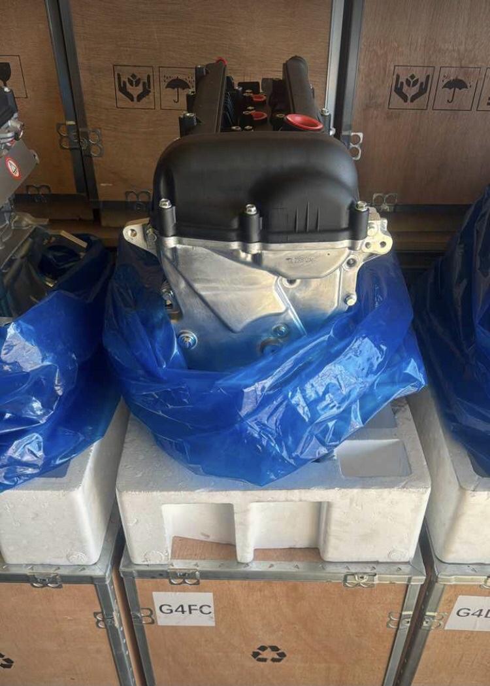
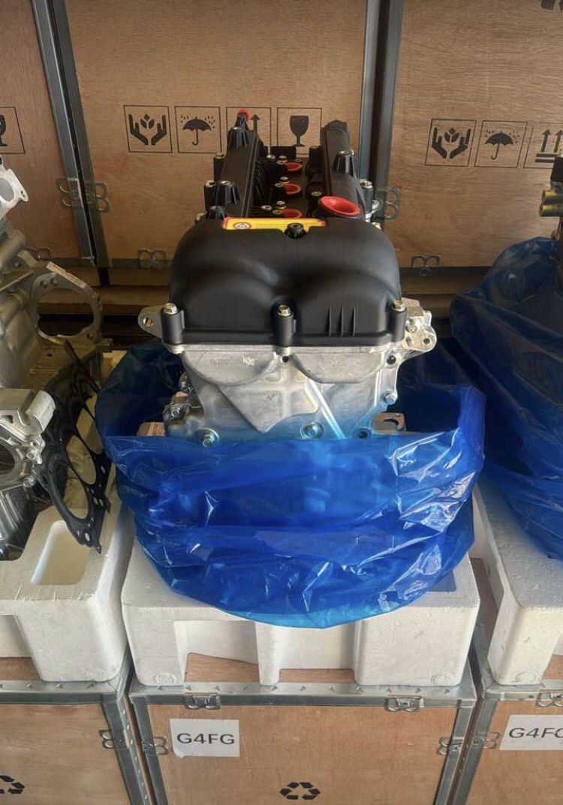
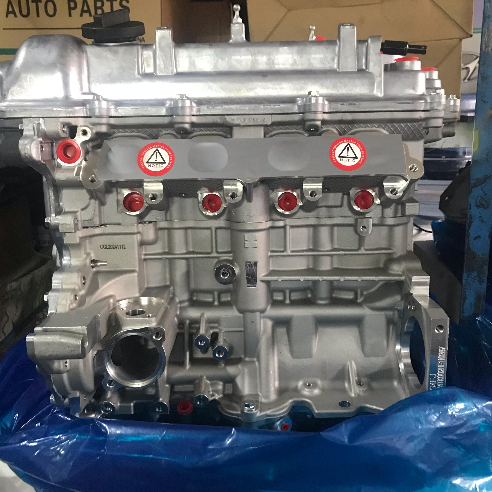
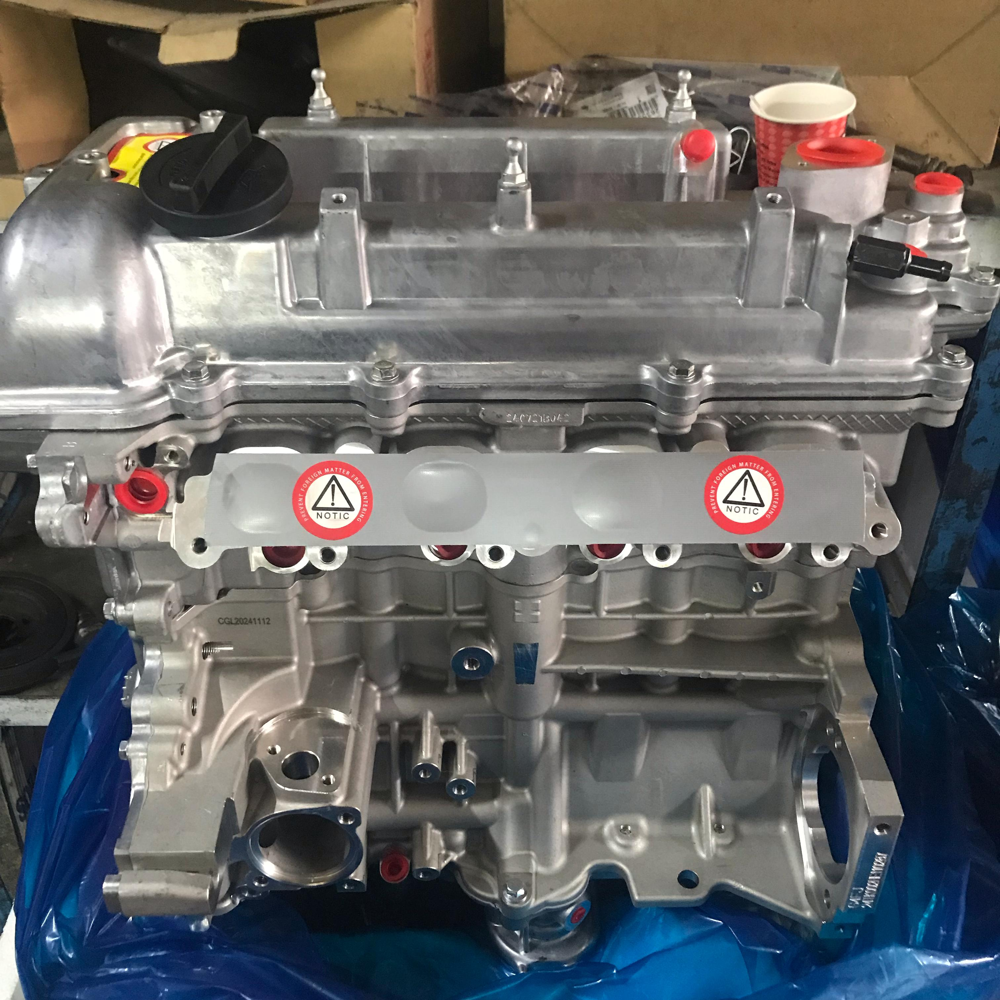
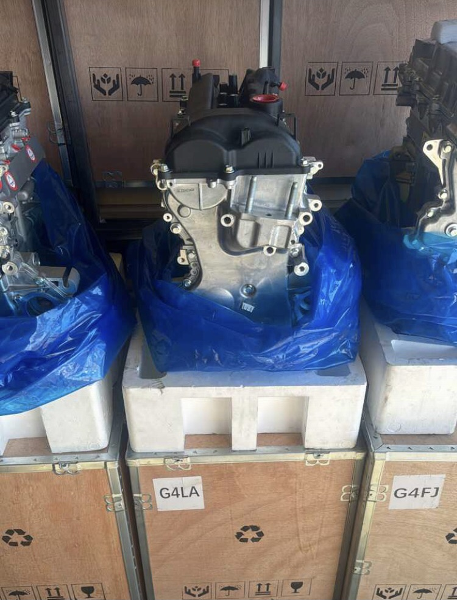
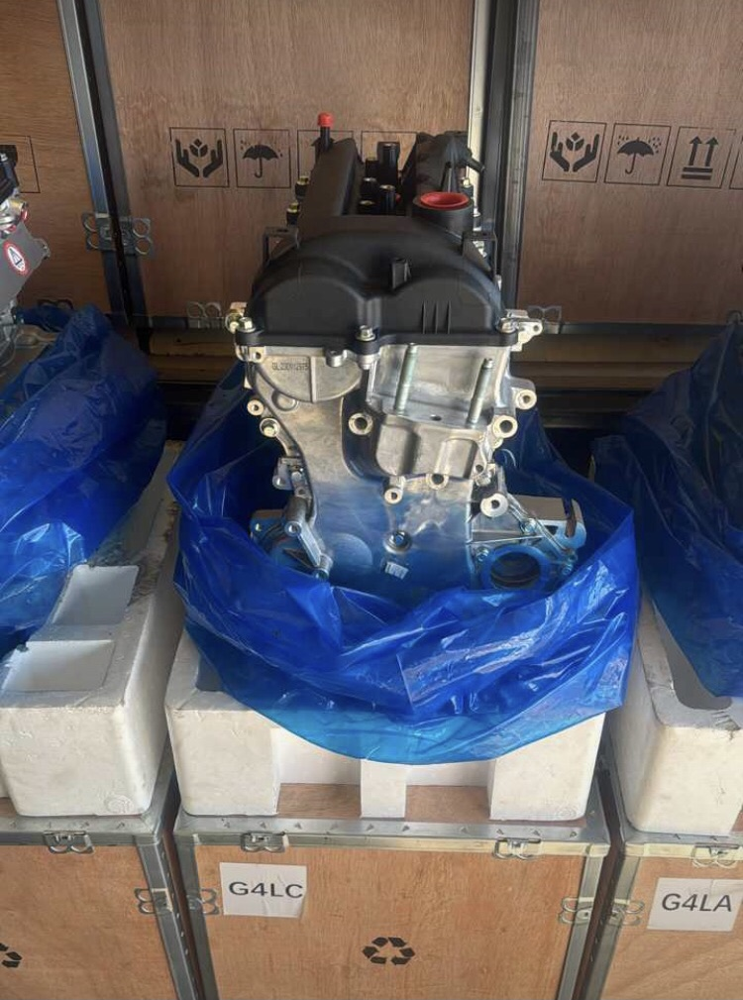
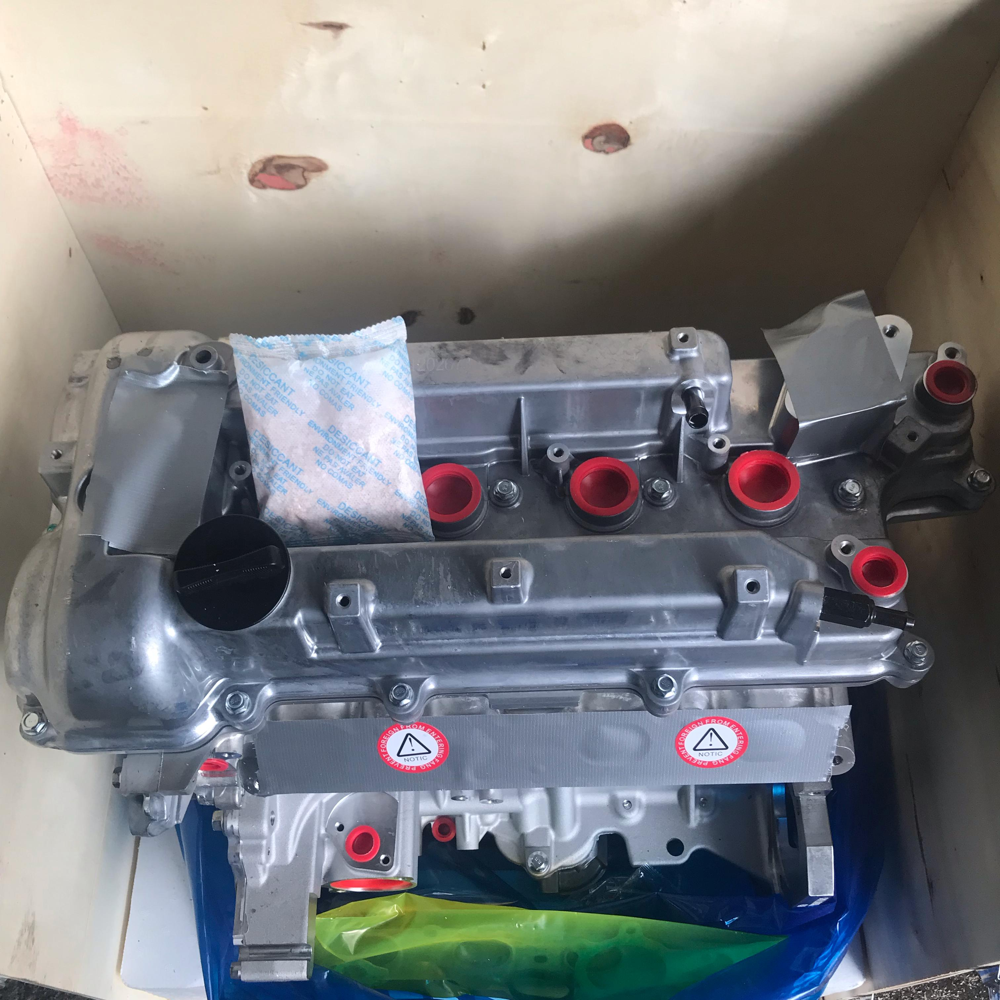
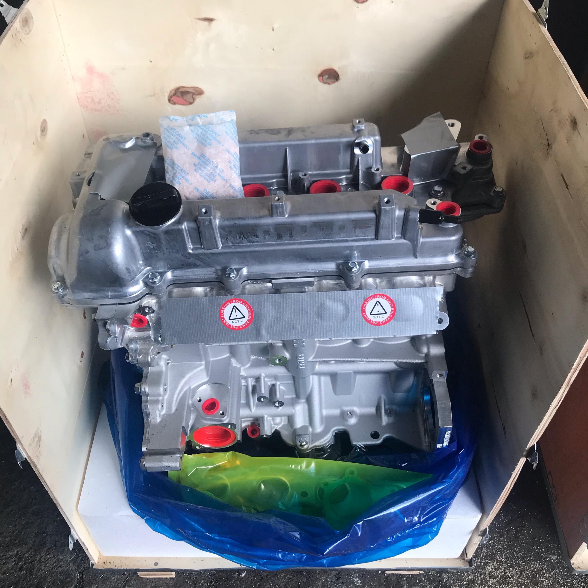
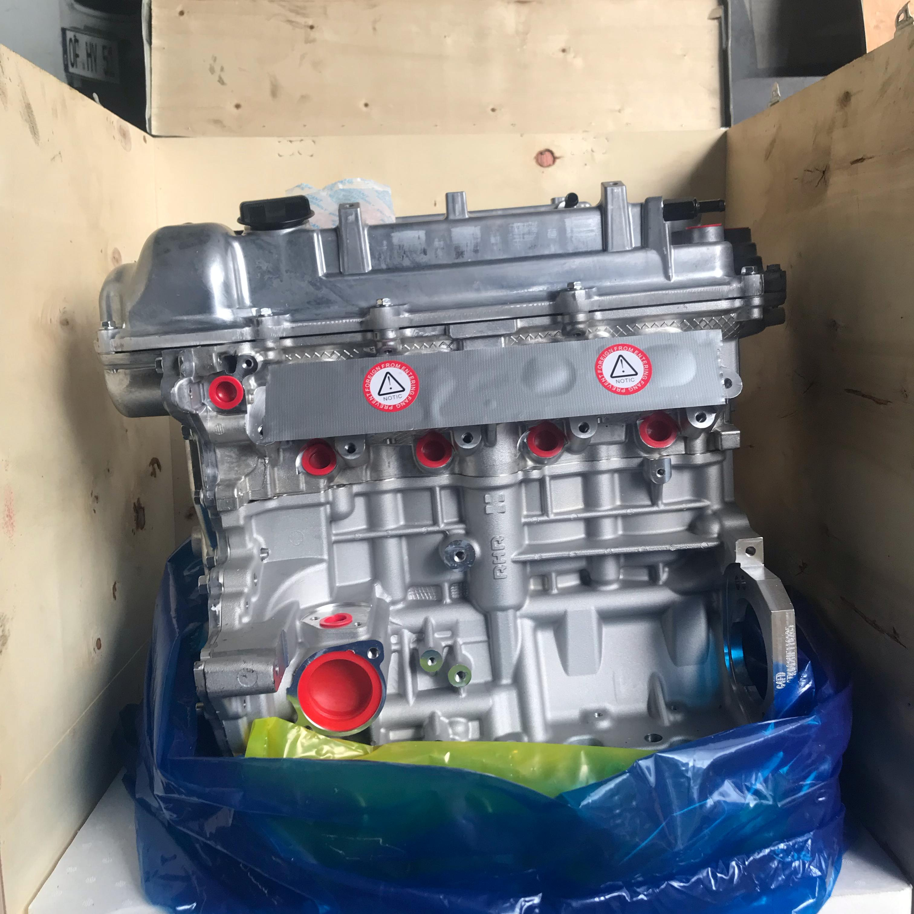

hyundai sıfır motor
sandık motor
Hyundai ve Kia araçlar için sıfır sandık motor kayıtlarını motor kodu, araç modeli ve teknik bilgiler üzerinden inceleyin. Ürün sayfaları, model sayfaları ve Türkiye geneli şehir sayfaları arasında doğrudan geçiş yapabilirsiniz.
model veya motor koduyla başlayın
hyundai & kia sıfır sandık motorlar
mevcut ürün kayıtları ve görsel dosya adları korunarak her motor için ayrı taranabilir sayfa oluşturuldu.

g4fc accent blue
hyundai accent blue için g4fc serisi sandık motor, yüksek performans.

g4fc i30
hyundai i30 uyumlu g4fc serisi benzinli motor.

g4fc kia ceed
kia ceed modelleriyle tam uyumlu g4fc serisi.

g4fg elantra
hyundai elantra 2010–2015 modelleri için g4fg serisi.
g4fg elantra (15+)
hyundai elantra 2015–2020 kasa için g4fg serisi.

g4fj tucson
hyundai tucson için özel temin edilmiş g4fj 1.6t.

g4fj sportage
kia sportage için g4fj serisi 1.6t turbolu.

g4fj tucson (alt)
hyundai tucson alternatif kasa için g4fj serisi.

g4la i10
hyundai i10 için g4la serisi 1.0 litre.

g4la i20
hyundai i20 için g4la serisi 1.0 litre.

g4lc accent blue
accent blue için g4lc serisi 1.4 litrelik motor.

g4lc i20
hyundai i20 modelleri için g4lc serisi 1.4 litre.

g4lc kia rio
kia rio için g4lc serisi 1.4 litre.

g4fd elantra
elantra için g4fd serisi 1.6 gdi.

g4fd i30
hyundai i30 1.6 gdi için g4fd serisi.

g4fd i30 (11-17)
hyundai i30 gd kasa modelleri için g4fd.

g4fd ix35
hyundai ix35 için g4fd serisi 1.6 gdi.

g4fd tucson
hyundai tucson benzinli için g4fd serisi.

g4fd kia ceed
kia ceed benzinli için g4fd serisi.

g4fd kia ceed (jd)
kia ceed jd kasa modelleri için g4fd.

g4fd cerato
kia cerato için g4fd serisi 1.6 gdi.

g4fd rio
kia rio benzinli için g4fd serisi.

g4fd soul
kia soul benzinli için g4fd serisi.

g4fd sportage
kia sportage benzinli için g4fd serisi.
doğru motoru bulmak için
araç modelini seçin
hyundai veya kia model sayfasından ilgili motor kayıtlarına geçin.
motor kodunu kontrol edin
g4fc, g4fg, g4fj, g4la, g4lc ve g4fd gibi kodları ürün sayfalarında karşılaştırın.
bilgileri whatsapp'tan gönderin
araç modeli, model yılı ve mevcut motor kodunu ileterek uyumluluk hakkında bilgi alın.
hyundai ve kia model sayfaları
illere göre hyundai sıfır motor
motor kodunuzu gönderin
uyumluluk konusunda bilgi almak için araç modelini, model yılını ve mevcut motor kodunu WhatsApp üzerinden iletebilirsiniz.